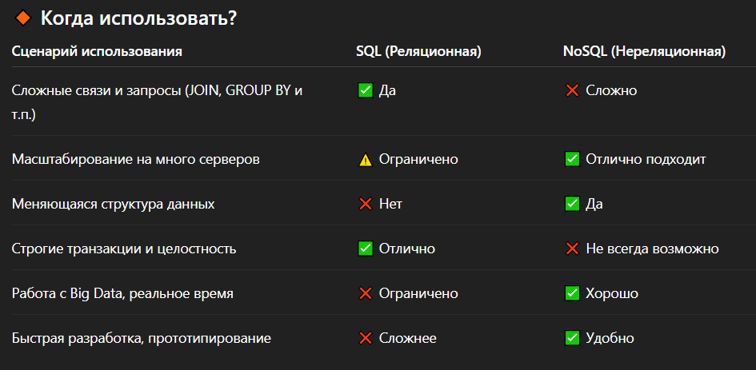

SQL vs NoSQL
SQL
- Данные хранятся в таблицах (строки и столбцы)
- Использует язык SQL (Structured Query Language) для запросов
- Жёсткая схема — структура таблицы фиксирована (нужно заранее описывать поля)
- Поддерживает ACID-свойства (гарантирует надёжность транзакций)
Плюсы:
- Высокая целостность данных
- Поддержка сложных запросов и связей между таблицами (JOIN)
- Зрелые технологии, хорошо документированы
- Отлично подходит для структурированных данных
Минусы:
- Менять структуру данных сложно (например, добавление новых полей)
- Меньшая гибкость в масштабировании на несколько серверов (горизонтальное масштабирование)
NoSQL
- Нет фиксированной схемы (или она очень гибкая)
- Хранение данных в виде документов (JSON), пар ключ-значение, графов, колонок
- Легко масштабируются горизонтально
- Ориентированы на производительность и гибкость, а не строгос
Плюсы:
- Отлично работает с большими объёмами неструктурированных данных
- Гибкая структура — можно добавлять новые поля без изменения схемы
- Простое горизонтальное масштабирование
- Часто быстрее для простых операций (запись/чтение)
Минусы:
- Слабее гарантии целостности (часто используется "eventual consistency")
- Могут отсутствовать привычные транзакции и JOIN'ы
- Нет единого стандарта языка запросов (не SQL)
Когда использовать

Модели транзакций для баз данных:
ACID
ACID - используется для SQL баз данных. Требования к транзакционной системе(СУБД),
обеспечивающие наиболее надёжную Consistency. Гарантирующих надёжность транзакций.
Требования ACID
- Атомарность(Atomicity) - гарантирует, что никакая транзакция не будет зафиксирована в системе частично.
Используется rollback - если транзакцию не удаётся завершить полностью, результаты всех её до сих пор
произведённых действий будут отменены.
- Согласованность(Consistency) - сохранение согласованности базы. Пример: если с одного счета деньги
списались,
они должны быть зачислены на другой счет.
- Изолированность(Isolation) - во время выполнения транзакции
параллельные транзакции не должны оказывать влияния на её результат. Изолированность — требование
дорогое,
поэтому в реальных БД существуют режимы, не полностью изолирующие транзакцию.
- Прочность(Durability) - при проблемах на нижних уровнях (к примеру, обесточивание системы или сбои в
оборудовании) изменения, сделанные успешно завершённой транзакцией, должны остаться сохранёнными после
возвращения системы в работу. Другими словами, если пользователь получил подтверждение от системы,
что транзакция выполнена, он может быть уверен, что сделанные им изменения не будут отменены из-за
какого-либо сбоя.
BASE
BASE - используется для NoSQL баз данных. Делают ставку на масштабируемость и доступность, жертвуя
строгой консистентностью.
- Basically Available (Базовая доступность) – система всегда отвечает, пусть даже не полностью
корректными данными.
- Soft state (Мягкое состояние) – состояние данных может быть промежуточным и меняться со временем
без внешних воздействий.
- Eventual consistency (Согласованность в итоге) – со временем все копии данных синхронизируются,
но в момент запроса могут отличаться.
Дамб БД
Дамб - файл, содержащий инструкции на языке SQL, за счет которых создается точная копия вашей БД как
по содержанию, так и по структуре.
Используется для:
- Перенос БД на другой сервер.
- Резервное копирование базы данных.